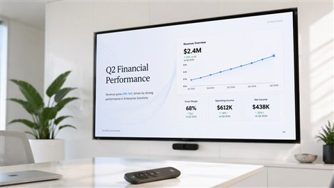

Model Release· Sep 8, 2026
Claude has been brilliant inside a chat window and forgettable everywhere else. A widget will not fix that alone, but it signals Anthropic finally understands that attention is the real product.
Model Release· Sep 8, 2026
Copilot stopped being an autocomplete two years ago, but 'preview' let enterprises dodge hard questions. GA is GitHub saying the agents are production-grade — now the security teams get to find out.
Model Release· Sep 5, 2026
Amazon is late to the frontier-model party, but Titan 3 is not a vanity model — it is a logistics play. For enterprises already inside AWS, good enough everywhere may beat best elsewhere.
Model Release· Sep 5, 2026
Everyone's been running local AI on hardware built for games. Nvidia's RTX AI Workstations are the first honest attempt to build a computer where the GPU is the whole point — and the prices show it.
Model Release· Sep 4, 2026
Other chatbots pretend they can see. Grok 4 actually does, in real time — and that changes what you can hand an assistant in the middle of a task.
Company News· Sep 4, 2026
Gmail has had AI assistants before, but they mostly composed emails on command. Gemini's new agentic layer doesn't just write — it acts, which is precisely why security teams should care.
Company News· Sep 3, 2026
Meta's AI Studio was always a consumer toy. Turning it into an enterprise platform is the company's most credible answer yet to Microsoft Copilot — if businesses can get past the privacy questions.
Model Release· Sep 3, 2026
Notion's databases have always been brilliant at storing structure — and terrible at keeping it updated. The new AI agents are the company's admission that the human was the slowest part of the system.
Model Release· Sep 2, 2026
The reasoning race just got cheaper, and that is the story. If the new o-series model really cuts the cost of deep thinking without cutting depth, it stops being a showcase and becomes the default workhorse.
Model Release· Sep 2, 2026
ElevenLabs spent years burying its best tools behind a web dashboard. Voice Island finally gives creators a place to call home — and it looks like the company's clearest bet yet that voice is the next big app category.

Model Release· Aug 29, 2026
OpenAI's video model now generates dialogue, effects, and ambient sound matched to the visuals — the missing piece for production use.

Model Release· Aug 29, 2026
Vertex customers get higher-fidelity generations with director-level camera movement — our testing shows it rivaling Sora shot-for-shot.

Model Release· Aug 29, 2026
The open-source model family keeps closing the gap with closed frontier models — self-hosters are the big winners.

Tools & Products· Aug 29, 2026
The agentic editor now plans and executes larger cross-file changes with fewer stale-context errors.

Tools & Products· Aug 29, 2026
The free VS Code agent plans, edits, runs, and self-corrects — with any model you connect.
Research· Aug 29, 2026
Our 200-image benchmark shows Flux matching or beating Midjourney on realism and text rendering.

Tools & Products· Aug 29, 2026
Prompt-to-presentation in minutes — we built 15 real decks to find where it still falls short.
Company News· Aug 29, 2026
Kuaishou's generator pairs near-top-tier quality with the most generous free credits in the category.
Tools & Products· Aug 29, 2026
We built three real apps in three weeks — here's where autonomous building shines and where it breaks.
Company News· Aug 29, 2026
Live social awareness lets Grok catch sentiment shifts hours before manual monitoring — for better and worse.